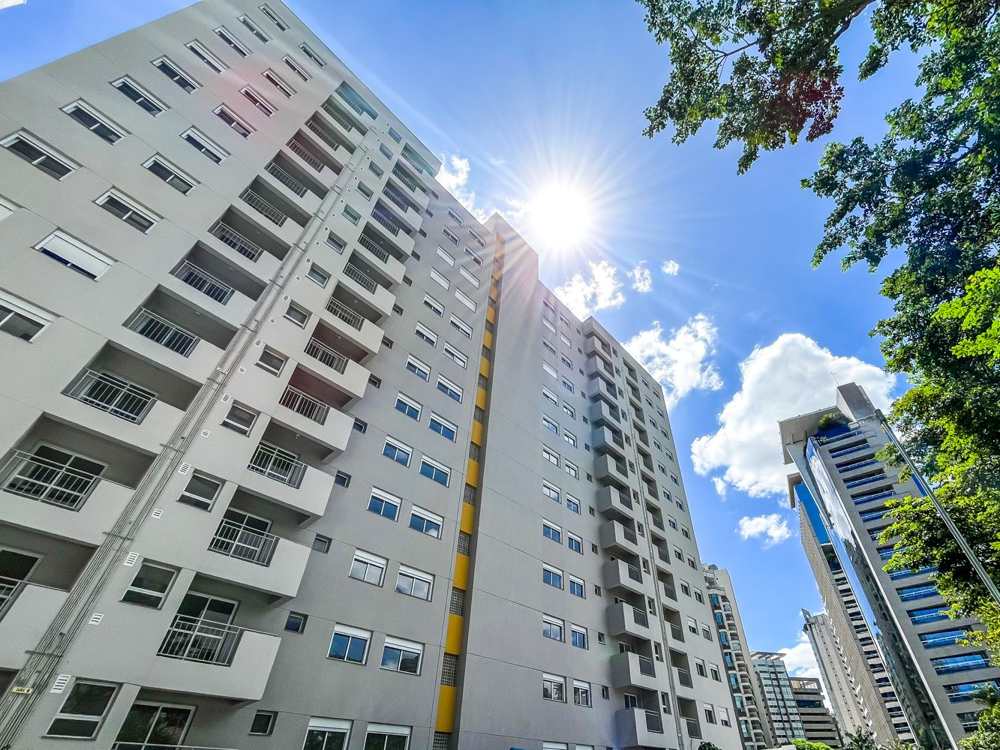
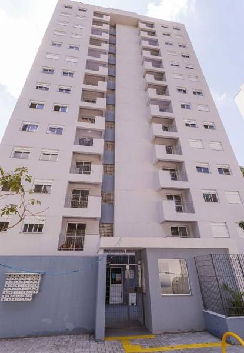
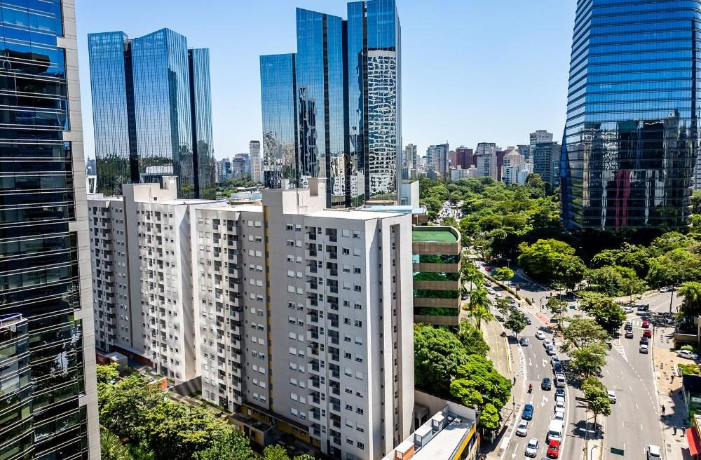
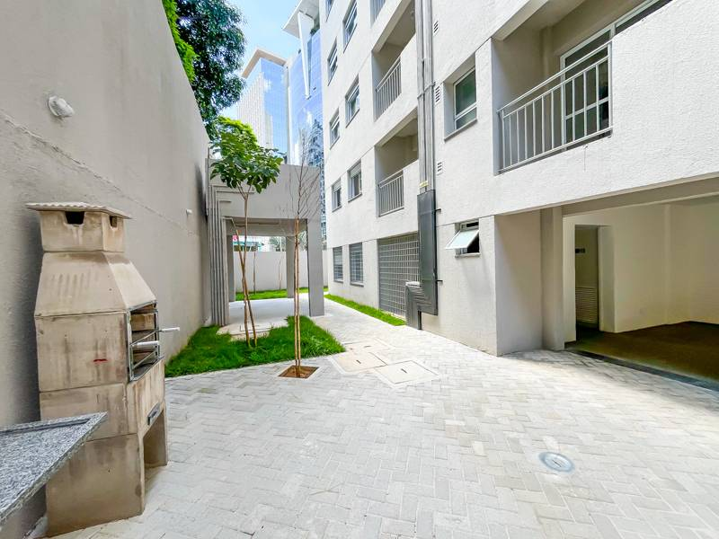
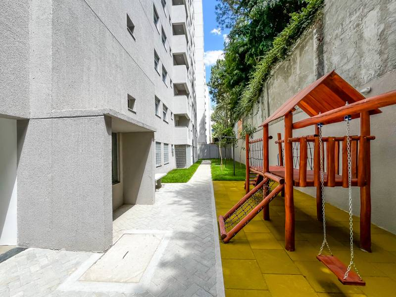

Apartamento na Vila Olímpia com 2 dormitórios — até 1/3 mais barato que os imóveis da região. Pronto para morar.
Por que o Coliseu Funchal
Morar na Vila Olímpia nunca foi tão acessível. O Apartamento Coliseu Funchal, na Rua Funchal, oferece o mesmo endereço premium que os grandes lançamentos da região — a 100m da Estação Vila Olímpia — por até 70% menos. O apartamento ideal para quem busca qualidade de vida, mobilidade e valorização no coração de São Paulo.





Comparativo de preços
Quem busca apartamento na Vila Olímpia sabe: a região é a mais valorizada de São Paulo. O Coliseu Funchal, na Rua Funchal, é a rara oportunidade de ter esse endereço por uma fração do preço de mercado. Ideal para morar ou investir com alta rentabilidade de aluguel.
Clientes satisfeitos
Veja o que dizem quem já conquistou seu apartamento na Vila Olímpia no Coliseu Funchal.
Não acreditei quando vi o preço. Fui visitar achando que havia algum problema — o apartamento era perfeito. Assinei o contrato na mesma semana!
Morava de aluguel em Pinheiros pagando caro demais. Hoje tenho meu próprio apartamento a 100m da Estação com parcela bem menor.
Comprei como investimento e já está alugado com ótima rentabilidade para a Vila Olímpia. Recomendo sem hesitar.
Localização
O Apartamento Coliseu Funchal fica na Rua Funchal, uma das vias mais nobres da Vila Olímpia — bairro que concentra os principais escritórios, restaurantes e serviços de São Paulo. A apenas 100 metros da Estação Vila Olímpia (Linha 9-Esmeralda), com acesso rápido à Faria Lima, Itaim Bibi, Brooklin e toda a cidade.
Perguntas frequentes
Sim. Os apartamentos do Coliseu Funchal na Rua Funchal, Vila Olímpia, estão com entrega imediata — prontos para morar sem necessidade de espera.
O Coliseu Funchal está localizado na Rua Funchal, Vila Olímpia, São Paulo — SP, a apenas 100 metros da Estação Vila Olímpia (Linha 9-Esmeralda). É uma das localizações mais valorizadas de São Paulo, com acesso direto à Faria Lima, Itaim Bibi e Brooklin. Veja nosso guia completo de quem vai morar na Vila Olímpia.
O Coliseu Funchal é um empreendimento com preço diferenciado em relação aos lançamentos da região. Enquanto outros imóveis na Vila Olímpia são vendidos a valores muito acima, o Coliseu Funchal oferece o mesmo endereço privilegiado com até 70% de economia — ideal para morar ou investir.
O apartamento no Coliseu Funchal aceita financiamento pela Caixa Econômica Federal, uso de FGTS e se enquadra no programa Minha Casa Minha Vida. Nosso corretor auxilia em todo o processo sem custo adicional.
Os apartamentos do Coliseu Funchal contam com 2 dormitórios em planta funcional e bem aproveitada, com área de lazer completa: playground, churrasqueira e área verde com paisagismo.
A Vila Olímpia é o bairro mais valorizado de São Paulo, concentrando os maiores escritórios e empresas da Faria Lima. Apartamentos na região têm rentabilidade de aluguel acima de 7% ao ano. Comprar no Coliseu Funchal, na Rua Funchal, representa uma das melhores relações custo-benefício disponíveis hoje no mercado paulistano.
Preencha abaixo e nosso corretor entra em contato em até 30 minutos. Sem compromisso.
Seus dados estão seguros e não são compartilhados com terceiros.